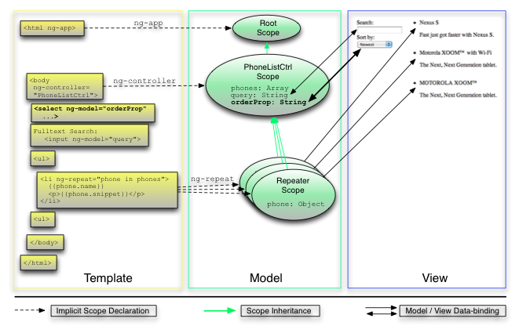

双向绑定
在这一步你会增加一个让用户控制手机列表显示顺序的特性。动态排序可以这样实现，添加一个新的模型属性，把它和迭代器集成起来，然后让数据绑定完成剩下的事情。
请重置工作目录：
git checkout -f step-4你应该发现除了搜索框之外，你的应用多了一个下来菜单，它可以允许控制电话排列的顺序。
步骤3和步骤4之间最重要的不同在下面列出。你可以在GitHub里看到完整的差别。
模板
app/index.html
Search: <input ng-model="query">
Sort by:
<select ng-model="orderProp">
<option value="name">Alphabetical</option>
<option value="age">Newest</option>
</select>
<ul class="phones">
<li ng-repeat="phone in phones | filter:query | orderBy:orderProp">
{{phone.name}}
<p>{{phone.snippet}}</p>
</li>
</ul>我们在index.html中做了如下更改：
- 首先，我们增加了一个叫做
orderProp的<select>标签，这样我们的用户就可以选择我们提供的两种排序方法。

- 然后，在
filter过滤器后面添加一个orderBy过滤器用其来处理进入迭代器的数据。orderBy过滤器以一个数组作为输入，复制一份副本，然后把副本重排序再输出到迭代器。
AngularJS在select元素和orderProp模型之间创建了一个双向绑定。而后，orderProp会被用作orderBy过滤器的输入。
正如我们在步骤3中讨论数据绑定和迭代器的时候所说的一样，无论什么时候数据模型发生了改变（比如用户在下拉菜单中选了不同的顺序），AngularJS的数据绑定会让视图自动更新。没有任何笨拙的DOM操作！
控制器
app/js/controllers.js：
function PhoneListCtrl($scope) {
$scope.phones = [
{"name": "Nexus S",
"snippet": "Fast just got faster with Nexus S.",
"age": 0},
{"name": "Motorola XOOM™ with Wi-Fi",
"snippet": "The Next, Next Generation tablet.",
"age": 1},
{"name": "MOTOROLA XOOM™",
"snippet": "The Next, Next Generation tablet.",
"age": 2}
];
$scope.orderProp = 'age';
}- 我们修改了
phones模型—— 手机的数组 ——为每一个手机记录其增加了一个age属性。我们会根据age属性来对手机进行排序。 -
我们在控制器代码里加了一行让
orderProp的默认值为age。如果我们不设置默认值，这个模型会在我们的用户在下拉菜单选择一个顺序之前一直处于未初始化状态。现在我们该好好谈谈双向数据绑定了。注意到当应用在浏览器中加载时，“Newest”在下拉菜单中被选中。这是因为我们在控制器中把
orderProp设置成了‘age’。所以绑定在从我们模型到用户界面的方向上起作用——即数据从模型到视图的绑定。现在当你在下拉菜单中选择“Alphabetically”，数据模型会被同时更新，并且手机列表数组会被重新排序。这个时候数据绑定从另一个方向产生了作用——即数据从视图到模型的绑定。
测试
我们所做的更改可以通过一个单元测试或者一个端到端测试来验证正确性。我们首先来看看单元测试：
test/unit/controllersSpec.js：
describe('PhoneCat controllers', function() {
describe('PhoneListCtrl', function(){
var scope, ctrl;
beforeEach(function() {
scope = {},
ctrl = new PhoneListCtrl(scope);
});
it('should create "phones" model with 3 phones', function() {
expect(scope.phones.length).toBe(3);
});
it('should set the default value of orderProp model', function() {
expect(scope.orderProp).toBe('age');
});
});
});单元测试现在验证了默认值被正确设置。
我们使用Jasmine的接口把PhoneListCtrl控制器提取到一个beforeEach块中，这个块会被所有的父块describe中的所有测试所共享。
运行这些单元测试，跟以前一样，执行./scripts/test.sh脚本，你应该会看到如下输出（注意：要在浏览器打开http://localhost:9876并进入严格模式，测试才会运行！）：
Chrome: Runner reset.
..
Total 2 tests (Passed: 2; Fails: 0; Errors: 0) (3.00 ms)
Chrome 19.0.1084.36 Mac OS: Run 2 tests (Passed: 2; Fails: 0; Errors 0) (3.00 ms)现在我们把注意力转移到端到端测试上来。
test/e2e/scenarios.js：
...
it('should be possible to control phone order via the drop down select box',
function() {
//let's narrow the dataset to make the test assertions shorter
input('query').enter('tablet');
expect(repeater('.phones li', 'Phone List').column('phone.name')).
toEqual(["Motorola XOOM\u2122 with Wi-Fi",
"MOTOROLA XOOM\u2122"]);
select('orderProp').option('Alphabetical');
expect(repeater('.phones li', 'Phone List').column('phone.name')).
toEqual(["MOTOROLA XOOM\u2122",
"Motorola XOOM\u2122 with Wi-Fi"]);
});
...端到端测试验证了选项框的排序机制是正确的。
你现在可以刷新你的浏览器，然后重新跑一遍端到端测试，或者你可以在AngularJS的服务器上运行一下。
练习
- 在
PhoneListCtrl控制器中，把设置orderProp那条语句删掉，你会看到AngularJS会在下拉菜单中临时添加一个空白的选项，并且排序顺序是默认排序（即未排序）。 - 在
index.html模板里面添加一个`{{orderProp}}绑定来实时显示它的值。
总结
现在你已经为你的应用提供了搜索功能，并且完整的进行了测试。下一课XHR和依赖注入我们将学习AngularJS的服务以及AngularJS如何使用依赖注入。